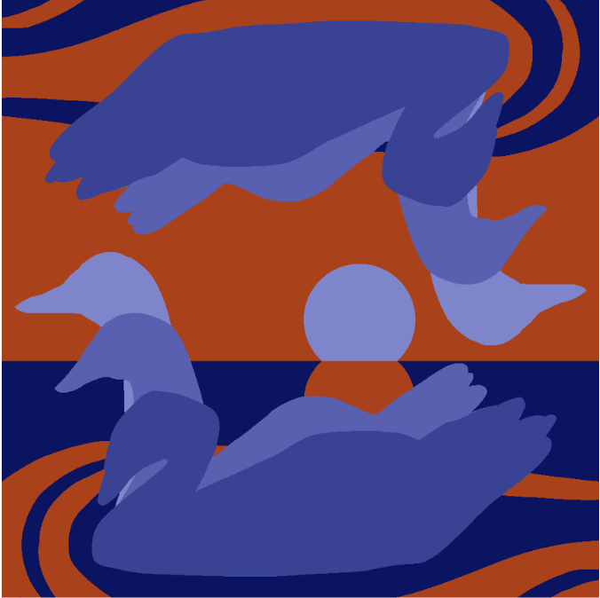

Ode to a Starling by Kathy Fang ('20)
Blithe starling! wings of gold and blue,
In skies of gray thou flyest far
Thy gilded melody of truth
Could naught by soot be ever marr’d:
Thy plumage, black as deepest night,
Could never shine with more the gleam:
Thy soften’d flight so humble graced
Thy eyes are spheres of wondrous light,
Thy talons sharp and small they seem,
As if the Fates had Eden cased—
And when surround’d by ravens black
Thou proves thyself of humble spirit:
For vain may be what thou doth lack
And thou hast none the need for it—
Yet when surround’d by larks so gold,
Thou radiates unlike the crowd:
Thou think thyself a starling mere—
As if thou never withers old;
And though thou never sings as loud,
The world doth hold her breath to hear—
Thy song, which in its tune so quaint
From Heaven’s crypt of dusty scripts,
And though thou thinkst thy song so faint
Thy message, lightly veiled in mist,
Doth travel far beyond the skies:
“Perhaps the beauty in a song,
The golden glimmer in a tune
Ought come from someplace deep inside:
Perhaps the heart who loves so long,
Or from the soul, which freed so soon,
“Should joyous be when tied in chains
Of poems sung in rhythm’d song
Of structure, rhyme, perhaps, refrain:
For when constraint is fixed upon
The wings of Poet’s artful bird,
Unconscious frees her beak and sings
Of lands unfound and seas unknown,
Of jade and diamond shining firm,
And gifts thou with a set of wings
And hence thou hast a Poet’s poem.”
Untitled by Rose Guan ('19)
